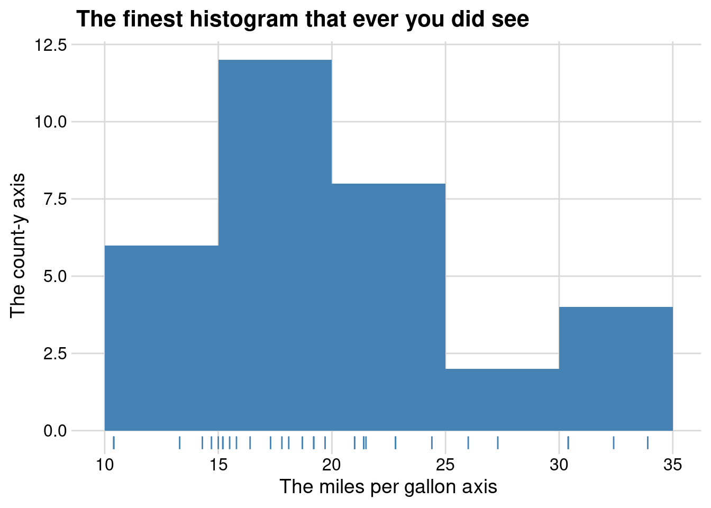
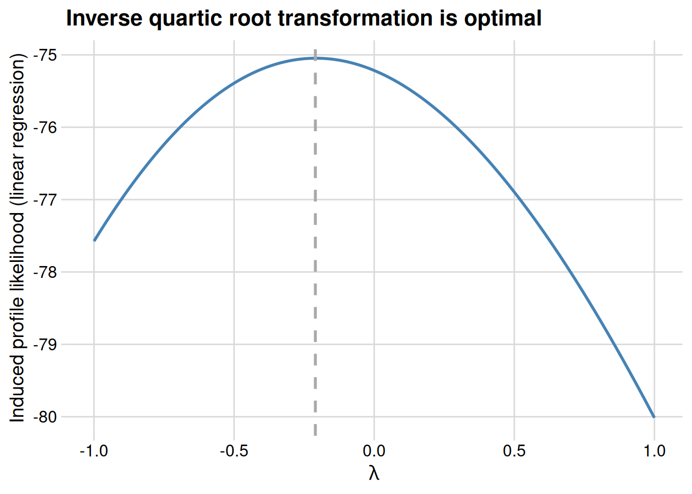

![]()

You may have heard that it is impossible to compare models when the outcome has been transformed in one model but not the other. This is not the case. Models fit to transformed data implicitly model the original data as well as the transformed data, and it is relatively straightforward to calculate the corresponding likelihoods. In this post, I’ll show you how to calculate these induced likelihoods. This will allow you to compare models fit to transformed data with models fit to the original, untransformed data.
Setting
Let’s assume have some continuous data \(x_1, ..., x_n\) that is independent and identically distributed. We transform this data via a nice, one-to-one function \(g : \mathbb{R} \to \mathbb{R}\) that sends \(x \mapsto g(x)\) to create a new data set \(y_1, ..., y_n\), such that \(y_i = g(x_i)\). We fit a model \(\mathcal M_x\) on the original data \(x_1, ..., x_n\) and a model \(\mathcal M_y\) on the transformed data \(y_1, ..., y_n\). Call the density of \(\mathcal M_x\) and \(\mathcal M_y\) respectively \(f_x\) and \(f_y\).
Since \(\mathcal M_x\) and \(\mathcal M_y\) have been fit on different datasets, standard tools to compare \(\mathcal M_x\) and \(\mathcal M_y\) aren’t immediately applicable, and we have to use some tricks to compare them. Note that the internet (and literature, for example Burnham and Anderson (2002) p. 81-82) is littered with people saying that you can’t compare \(\mathcal M_x\) and \(\mathcal M_y\), and the few references (for example Akaike (1978)) that do discuss how to compare models with transformed responses are light on details.
That density transformation stuff that everyone is always forgetting
The key observation is that putting a model on the \(y_i\) is equivalent to putting a model on the \(x_i\) since \(g\) is a one-to-one mapping and \(y_i = g(x_i)\). In particular, \(\mathcal M_y\) has a density in terms of \(x\), in addition to have a density in terms of \(y\). Let’s call this density \(f_{x'}\).
At this point, we have to remember how transformations affect densities, which I always have to look up because I forget (Casella and Berger (2002) section 4.6 is one reference). In particular, for an individual \(y_i\), we have
\[\begin{align} f_y(y_i) = f_{x'}(g^{-1} (y_i)) \cdot \left \vert \frac{\partial g^{-1}}{\partial y} (y_i) \right \vert, \end{align}\]
where the second term comes the Jacobian correction when doing a transformation of variables during integration. Working with individual individual data points is acceptable because we assume that the data points are indepedent and \(y_i\) is only a function of \(x_i\). Anyway, we leverage the transformed density to compute the log-likelihood of the \(y_i\) under \(\mathcal M_y\) and find
\[\begin{align} \log \mathcal L(y_1, ..., y_n | \mathcal M_{y}) &= \sum_{i=1}^n \log f_y(y_i) \\ &= \sum_{i=1}^n \log f_{x'}(g^{-1} (y_i)) + \log \left \vert \frac{\partial g^{-1}}{\partial y} (y_i) \right \vert \\ &= \sum_{i=1}^n \log f_{x'}(x_i) + \log \left \vert \frac{\partial g^{-1}}{\partial y} (y_i) \right \vert. \end{align}\]
This is promising, because the \(\sum_{i=1}^n \log f_{x'}(x_i)\) term is the induced log-likelihood of \(\mathcal M_y\) on the original data \(x_i\), which is exactly what we want. Rearranging, we find
\[\begin{align} \log \mathcal L(x_1, ..., x_n | \mathcal M_y) &= \sum_{i=1}^n \log f_{x'}(x_i) \\ &= \log \mathcal L(y_1, ..., y_n | \mathcal M_y) - \sum_{i=1}^n \log \left \vert \frac{\partial g^{-1}}{\partial y} (y_i) \right \vert. \end{align}\]
So we can use a standard log-likelihood calculation for \(y_i\) together with an adjustment to compensate for transformation, and end up with the induced likelihood on the original data. This induced likelihood will be comparable to the likelihood induced by \(\mathcal M_x\), and in general other models fit to the original, untransformed data.
A simple example
Let’s consider the mpg variable of the mtcars dataset, which comes with every R installation. We’ll consider two models:
- a normal model for the original data, and
- a normal model on log transformed data.
The data is boring, whatever, here’s a histogram:
First let’s do some basic prep work and load our data, and define the transformation and the inverse transformation. We’ll also create the transformed data set.
x <- mtcars$mpg
trans <- function(x) log(x)
inv_trans <- function(y) exp(y)
y <- trans(x)In our case, we’re using a log() transformation, which is nice because we need both the derive and the inverse of this function, and both of these are easy to figure out.
Aside: for some traditional tranformations, such as Box-Cox transformations, or arcsine-square root transformation, finding the inverse by hand can be a pain. As a general rule, you can get the derivative either via automatic differentiation (not well supported in R) or numerical differentiation (moderately well supported in R). You can also use uniroot() to find inverses, but this approach is computationally expensive and I don’t in general recommend it.
I strongly encourage an enterprising R developer to create an R package that provides objects encoding one-to-one transformations and their inverses, thus enabling the rest of us to be lazy. At the moment, the best hack I’ve come across is to the leverage link functions and their inverses from family objects.
Anyway, at some point, you define the transformation, and the inverse transformation. It’s a good idea to sanity check that the functions you write are actually inverses of each other:
x == inv_trans(trans(x)) [1] TRUE TRUE TRUE TRUE TRUE TRUE FALSE FALSE TRUE FALSE TRUE FALSE
[13] TRUE FALSE TRUE TRUE TRUE TRUE TRUE TRUE FALSE FALSE FALSE FALSE
[25] FALSE FALSE FALSE TRUE FALSE FALSE TRUE TRUEx == trans(inv_trans(x)) [1] TRUE TRUE TRUE TRUE TRUE TRUE TRUE TRUE TRUE TRUE TRUE TRUE TRUE TRUE TRUE
[16] TRUE TRUE TRUE TRUE TRUE TRUE TRUE TRUE TRUE TRUE TRUE TRUE TRUE TRUE TRUE
[31] TRUE TRUEIn my case, I’m working with log()s, and so there’s some numerical error and my inverses are not quite exact. In practice, it turns out that I can ignore this for this post, but this may not always be case1.
Okay, now let’s define a function that computes the induced log-likelihood of \(\mathcal M_y\) on the original, untransformated data. For convenience, I’m going to assume that our model is represented as a distribution object from my distributions3 package.
library(distributions3)
library(numDeriv)
set.seed(27)
#' @param dist The model fit to the transformed data `y`, as
#' a `distributions3::distribution` object.
#' @param y The tranformed data.
#' @param inv_trans The inverse transformation function.
induced_log_likelihood <- function(dist, y, inv_trans) {
# note that grad() is a function from the numDeriv package
# for numerical differentiation. automatic differentiation
# would be slightly more computationally efficient but is
# not as supported in R
log_likelihood(dist, y) - sum(log(abs(grad(inv_trans, y))))
}Now we fit normal models to the original and the transformed data using MLE estimators.
x_fit <- fit_mle(Normal(), x)
y_fit <- fit_mle(Normal(), y)At first glance, you might want to compare the likelihood of these models, but you should not, since x_fit and y_fit are not fit to the same data!
# misleading! don't do this when y = g(x)!
log_likelihood(x_fit, x)
log_likelihood(y_fit, y)Instead we want to compare the likelihood from the model fit to x and the induced likelihood on the \(x\) from the fit to y.
log_likelihood(x_fit, x)[1] -102.3857induced_log_likelihood(y_fit, y, inv_trans)[1] -100.781In our case, it looks like the transformed fit is slightly better (recall that more positive log-likelihoods are better). It’s a bit hard to interpret log-likelihoods until you start playing with them more, but this is a relatively small practical difference.
A linear regression example
Now we’ll leave the pleasant world of distributions3 and do a more practical linear regression example. Now we’ll use mpg as an outcome of a simple linear regression, and use the wt variable from the mtcars dataset as a predictor. We start by fitting out models, again using the log() transformation we previously defined.
original_fit <- lm(mpg ~ wt, mtcars)
transformed_fit <- lm(trans(mpg) ~ wt, mtcars)Now we need a way to compute the log-likelihood of these models. We leverage the existing logLik() function for this.
# only works for lm-like objects, but hopefully easy to generalize
# returns a logLik object
induced_logLik <- function(fit, inv_trans) {
y <- model.response(model.frame(fit))
logLik(fit) - sum(log(abs(grad(inv_trans, y))))
}This let’s us compare the original model and the transformed model:
logLik(original_fit)'log Lik.' -80.01471 (df=3)induced_logLik(transformed_fit, inv_trans)'log Lik.' -75.21614 (df=3)Again, it looks like the transformed model is slightly better (recall that high bigger densities are more likely, so high log-likelihoods are more probable). However, these models are not nested, and so we cannot apply standard likelihood ratio tests (or Wald or Rao tests).
You may have been taught that this makes these models incomparable, but this is not the case. The log-likelihood is a proper scoring rule, and so all we really want is to minimize the log-likelihood, as measured on the original, untransformed data. The real issue is that there isn’t a nice analytical form for a likelihood ratio test.
However, we can use the bootstrap to estimate a sampling distribution for the log-likelihoods of these models, just like we might with another loss function like mean square error2.
Anyway, here’s some code for a simple bootstrap:
library(dplyr)
library(rsample)
library(purrr)
boots <- bootstraps(mtcars, times = 200)
fit_on_original_data <- function(split)
lm(mpg ~ wt, analysis(split))
fit_on_transformed_data <- function(split)
lm(trans(mpg) ~ wt, analysis(split))
fits <- boots %>%
mutate(
original_fit = map(splits, fit_on_original_data),
transformed_fit = map(splits, fit_on_transformed_data),
original_llh = map_dbl(original_fit, logLik),
induced_llh = map_dbl(transformed_fit, induced_logLik, inv_trans),
) %>%
mutate_if(~inherits(.x, "logLik"), as.numeric)At this point you could do a paired T-test on the differences, or you could just plot the paired differences in log-likelihoods between the models, resulting in the following:

Again, it seems like the transformed model is better, although only marginally so. You could also compare the AIC and BIC of the two models.
induced_AIC <- function(fit, inv_trans) {
lls <- induced_logLik(fit, inv_trans)
-2 * as.numeric(lls) + 2 * attr(lls, "df")
}
induced_BIC <- function(fit, inv_trans) {
lls <- induced_logLik(fit, inv_trans)
nos <- attr(lls, "nobs")
-2 * as.numeric(lls) + log(nos) * attr(lls, "df")
}
AIC(original_fit)[1] 166.0294induced_AIC(transformed_fit, inv_trans)[1] 156.4323So tranformation is better in terms of AIC (smaller is better).
BIC(original_fit)[1] 170.4266induced_BIC(transformed_fit, inv_trans)[1] 160.8295It is also better in terms of BIC (smaller is better)3.
# these should be equal, but are not
deviance(original_fit)[1] 278.3219as.numeric(-2 * logLik(original_fit))[1] 160.0294I’m guessing that these differ by a scaling factor only, since it’s pretty common to omit constant terms from likelihood calculations for efficiency, but also it does result in mysteries like this. It looks like someone else came across a similar thing for GLMs, so heads up I guess.
For skeptical machine learners
If you come from a machine learning background, you may find this whole exercise pointless, for two reasons.
The first is that you’re probably using an estimator that doesn’t give you densities for your predictions, so comparing likelihoods of transformed and untransformed models isn’t possible for you. It probably feels natural to get predictions using your model fit to the transformed data, and then backtransform to get predictions on the original scale.
This is what sklearn does with the TransformedTargetRegressor, for example. You may be surprised to learn that this approach does not in general result in consistent predictions for conditional means! See Duan (1983) for a short, pleasant read on why this is not the case, as well as an introduction to Duan’s smearing estimator, which is consistent for prediction under some relatively sane conditions on the transformation \(g\). As a general rule, backtransformed predictions can be surprisingly nasty to reason about.
You might also have a second complaint, which is that the likelihood is dumb loss function, and that you should use mean squared error instead. If this is the case, invite your friendly neighborhood Bayesian to yell at you.
One final trick: Box-Cox transformations
It turns out that this likelihood adjustment trick is also how to people estimate the optimal \(\lambda\) for Box-Cox transformations. The Box-Cox transformation is a slight variation on a power tranformation such that \(\lambda = 0\) corresponds to taking a logarithm, and looks like:
\[\begin{align} y &= \begin{cases} \displaystyle \frac{x^\lambda - 1}{\lambda} & \text{ if } \lambda \neq 0 \\ \log x & \text{ if } \lambda = 0 \end{cases} \end{align}\]
If you want to do a quick transformation of \(y\), you can fit a normal distribution to \(y\). Using distributions3, we can compute the log-likelihood on the original data via the transformation adjustment.
boxcox <- function(x, lambda) {
if (lambda == 0) log(x) else (x^lambda - 1) / lambda
}
# i calculated this inverse by hand which was fine
# but wow yeah it would be really nice to have a package
# that automatically finds inverses for common bijections
inv_boxcox <- function(y, lambda) {
if (lambda == 0) exp(y) else (lambda * y + 1)^(1 / lambda)
}
# not vectorized in lambda!
simple_boxcox_log_likelihood <- function(x, lambda) {
y <- boxcox(x, lambda)
y_fit <- fit_mle(Normal(), y)
log_likelihood(y_fit, y) -
sum(log(abs(grad(inv_boxcox, y, lambda = lambda))))
}If we plot this log-likelihood as a function of \(\lambda\) we see that a log transformation is about optimal.

We could also fit more complicated models to \(y\). For example, a simple linear regression.
# not vectorized in lambda!
profile_boxcox_log_likelihood <- function(x, z, lambda) {
# x is the original data
# y the transformed data
# z is a predictor in a linear regression of z on y
y <- boxcox(x, lambda)
y_fit <- lm(y ~ z)
logLik(y_fit) - sum(log(abs(grad(inv_boxcox, y, lambda = lambda))))
}Using the wt variable from the mtcars dataset as a predictor for y in a linear regression, we now find that something more like an inverse quartic root transformation is optimal.

TL; DR
Comparing models with transformed and non-transformed outcomes is hard. You should probably use held-out induced likelihoods for these comparisons, or maybe the optimism bootstrap.
Prediction is hard with transformations. Use Duan’s Smearing estimator. Also, please, please, please report error on the original scale. Nobody knows how to interpret the root mean square error of log home price.
Transforming your outcome, with either a direct transformation or a link function, dramatically changes the interpretation of parameters in your model.
There isn’t much computational infrastructure to support inference after transformation, so be aware of how this can cause frustration down the line.
Just use a GLM with a link function instead. You can thank me later.
Thanks to Aki Vehtari for writing an FAQ on cross-validation with some comments on transformed outcomes. I didn’t understand some of his comments, and this post is largely a result of me sorting those comments out for myself. Also thanks to commenters who point out helped me when I got stuck in this Stan discourse thread.
If you are interested in trying out many transformations all at once, with a Gaussian model on the transformed outcome, you may be interested in the trafo package (Medina et al. (2019)). The associated paper in the R journal derives likelihood adjustments for an enormous number of common transformations. Note that trafo takes a rather different approach to model selection that I do in this blog post – i.e. it helps you find a transformation of your outcome that has normally distributed errors with constant variance, whereas I instead suggest choosing the model that minimizes out-of-sample log-likelihood.
References
Akaike, Hirotugu. 1978. “On the Likelihood of a Time Series Model.” Journal of the Royal Statistical Society. Series D (The Statistician) 27 (3/4): 217–35. https://doi.org/10.2307/2988185.
Burnham, Kenneth P., and David Ray Anderson. 2002. Model Selection and Multimodel Inference: A Practical Information-Theoretic Approach. 2. ed., [4. printing}. New York, NY: Springer.
Casella, George, and Roger L. Berger. 2002. Statistical Inference. 2nd ed. Australia ; Pacific Grove, CA: Thomson Learning.
Duan, Naihua. 1983. “Smearing Estimate: A Nonparametric Retransformation Method.” Journal of the American Statistical Association 78 (383): 605–10. https://doi.org/10.2307/2288126.
Goldberg, David. 1991. “What Every Computer Scientist Should Know about Floating-Point Arithmetic.” ACM Computing Surveys 23 (1): 5–48. https://doi.org/10.1145/103162.103163.
Medina, Lily, Ann-Kristin Kreutzmann, Natalia Rojas-Perilla, and Piedad Castro. 2019. “The R Package Trafo for Transforming Linear Regression Models” 11: 25.
Footnotes
John Cook has a blog post that’s a nice introduction if you haven’t seen floating point arithmetic before. After that Goldberg (1991) is a classic reference worth at least skimming.↩︎
You could also do cross-validation, but it turns out that it’s more difficult than I expected to calculate out-of-sample predictive likelihoods in R. The optimism bootstrap is a nice option here, since you get an approximately unbiased measure risk estimate without having to do out-of-sample calculations.↩︎
It is also fairly natural to compare the deviance of the transformed and untransformed models, and in the process of playing with this, I can across the rather odd result that
deviance()and-2 * logLik()don’t return the same thing onlm()objects.↩︎